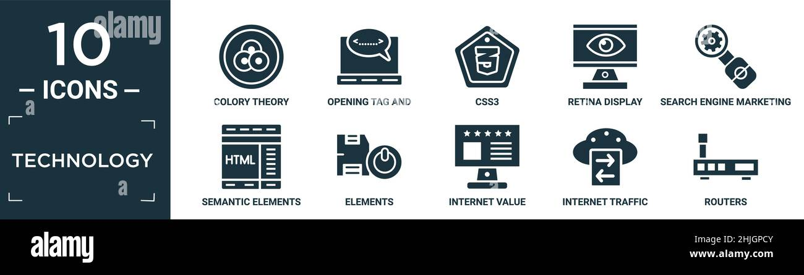

ETIQUETAS SEMANTICAS
El etiquetado semántico consiste en la utilización de una serie de, hasta la presente, 84 etiquetas. Cada etiqueta semántica es una balise informática que, una vez aplicada, permite describir las características de tipo y genero textuales. Las etiquetas pertenecen tanto a la microestructura como la macroestructura. A nivel de microestructura existen dos principales etiquetas: como las de léxico en cuanto a su inferencia u opacidad y las de diferentes isotopías que aparecen en el texto. A nivel de macroestructura se crearon las balises necesarias para cada tipo y genero textuales. Según Fernández, A. G., & Vivar, I. U. (2006). Funciones textuales: etiquetas semánticas. In Linguistique plurielle: Valencia. 25, 26 et 27 Octobre 2006 (pp. 383-395). Departamento de Lingüística Aplicada. 